In this lab you will commence developing the data model. It will involve creating relationships between tables, and then configuring table and column properties to improve the friendliness and usability of the data model. You will also create hierarchies and create quick measures.
This lab is one of many in a series of labs that was designed as a complete story from data preparation to publication as reports and dashboards.
In this exercise you will create model relationships.
In this task you will setup the environment for the lab.
In this task you will create model relationships.
-
In Power BI Desktop, at the left, click the Model view icon.

-
If you do not see all seven tables, scroll horizontally to the right, and then drag and arrange the tables more closely together so they can all be seen at the same time.
Tip: You can also use the zoom control located at the bottom of the window.
In Model view, it’s possible to view each table and relationships (connectors between tables). Presently, there are no relationships because in the Prepare Data in Power BI Desktop lab, you disabled the data load relationship options.
-
To return to Report view, at the left, click the Report view icon.

-
To view all table fields, in the Fields pane, right-click an empty area, and then select Expand All.
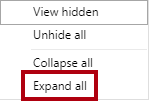
-
To create a table visual, in the Fields pane, from inside the Product table, check the Category field.

The labs use a shorthand notation to reference a field. It will look like this: Product | Category. In this example, Product is the table name and Category is the field name.
-
To add an additional column to the table, in the Fields pane, check the Sales | Sales field.
-
Notice that the table visual lists four product categories, and that the sales value is the same for each, and the same for the total.

The issue is that the table is based on fields from different tables. The expectation is that each product category displays the sales for that category. However, because there isn’t a model relationship between these tables, the Sales table is not filtered. You’ll now add a relationship to propagate filters between the tables.
-
On the Modeling ribbon tab, from inside the Relationships group, click Manage Relationships.

-
In the Manage Relationships window, notice that no relationships are yet defined.
-
To create a relationship, click New.
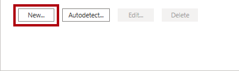
-
In the Create Relationship window, in the first dropdown list, select the Product table.

-
In the second dropdown list (beneath the Product table grid), select the Sales table.
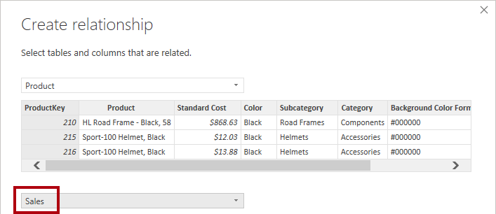
-
Notice the ProductKey columns in each table have been automatically selected.
The columns were selected because they share the same name and data type.
-
In the Cardinality dropdown list, notice that One To Many (1:*) is selected.
The cardinality was automatically detected, because Power BI understands that the ProductKey column from the Product table contains unique values. One-to-many relationships are the most common cardinality, and all relationship you create in this lab will be this type.
-
In the Cross Filter Direction dropdown list, notice that Single is selected.
*Single filter direction means that filters propagate from the “one side” to the “many side”. In this case, it means filters applied to the Product table will propagate to the Sales table, but not in the opposite direction. *
-
Notice that the Mark This Relationship Active is checked.
*Active relationships propagate filters. It’s possible to mark a relationship as inactive so filters don’t propagate. Inactive relationships can exist when there are multiple relationship paths between tables. In this case, model calculations can use special functions to activate them.
-
Click OK.

-
In the Manage Relationships window, notice that the new relationship is listed, and then click Close.
-
In the report, notice that the table visual updated to display different values for each product category.

Filters applied to the Product table now propagate to the Sales table.
-
Switch to Model view, and then notice there is now a connector between the two tables (it does not matter if the tables are positioned next to each other).

-
In the diagram, notice that you can interpret the cardinality which is represented by the 1 and ***** indicators.
Filter direction is represented by the arrow head. A solid line represents an active relationship; a dashed line represents an inactive relationship.
-
Hover the cursor over the relationship to highlight the related columns.
There’s an easier way to create a relationship. In the model diagram, you can drag and drop columns to create a new relationship.
-
To create a new relationship using a different technique, from the Reseller table, drag the ResellerKey column on to the ResellerKey column of the Sales table.
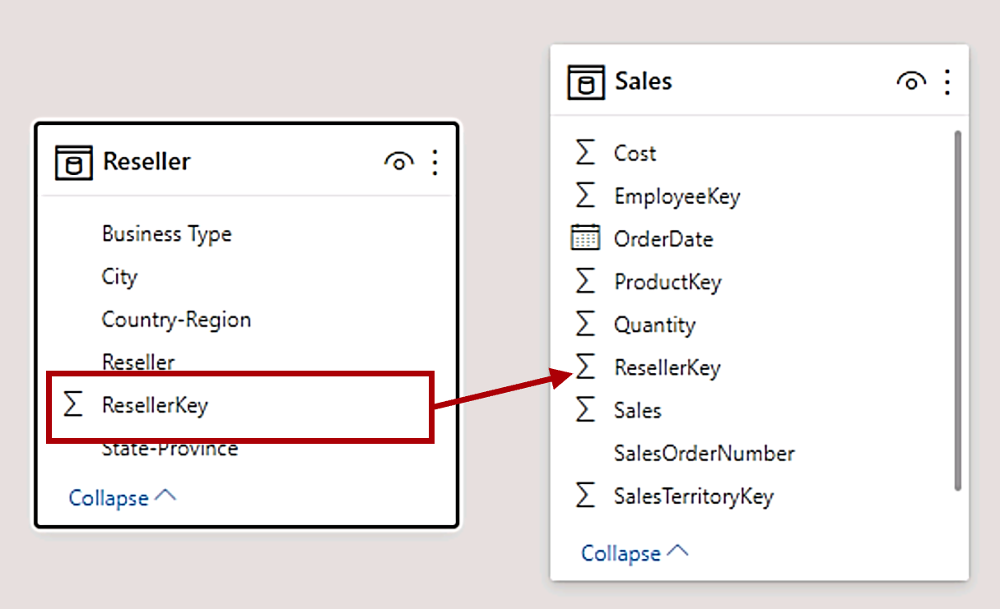
Tip: Sometime a column doesn’t want to be dragged. If this situation arises, select a different column, and then select the column you intend to drag again, and then try again. Ensure that you see the new relationship added to the diagram.
-
Use the new technique to create the following two model relationships:
*In this lab the SalespersonRegion and Targets tables will remain disconnected. There’s a many-to-many relationship between salespeople and regions.
-
In the diagram, arrange the tables so that the Sales table is positioned in the center of the diagram, and the related tables are arranged about it. Position the disconnected tables to the side.

-
Save the Power BI Desktop file.
In this exercise you will configure each table by creating hierarchies, and hiding, formatting, and categorizing columns.
-
In Model view, in the Fields pane, if necessary, expand the Product table to reveal all fields.
-
To create a hierarchy, in the Fields pane, right-click the Category column, and then select Create Hierarchy.
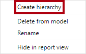
-
In the Properties pane (to the left of the Fields pane), in the Name box, replace the text with Products.
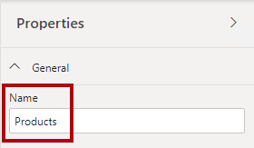
-
To add the second level to the hierarchy, in the Properties pane, in the Hierarchy dropdown list, select Subcategory (you might need to scroll down inside the pane).
-
To add the third level to the hierarchy, in the Hierarchy dropdown list, select Product.
-
To complete the hierarchy design, click Apply Level Changes.
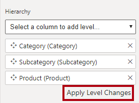
Tip: Don’t forget to click Apply Level Changes—it’s a common mistake to overlook this step.
-
In the Fields pane, notice the Products hierarchy.

-
To reveal the hierarchy levels, expand the Products hierarchy.

-
To organize columns into a display folder, in the Fields pane, first select the Background Color Format column.
-
While pressing the Ctrl key, select the Font Color Format column.
-
In the Properties pane, in the Display Folder box, enter Formatting.

-
In the Fields pane, notice that the two columns are now inside a folder.
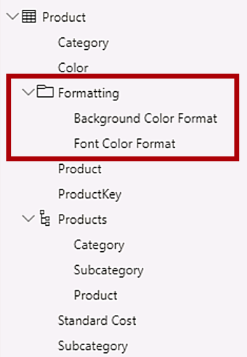
Display folders are a great way to declutter tables—especially for tables that comprise many fields.
-
In the Sales table, select the Cost column.
-
In the Properties pane, in the Description box, enter: Based on standard cost

Descriptions can be applied to tables, columns, hierarchies, or measures. In the Fields pane, description text is revealed in a tooltip when a report author hovers their cursor over the field.
-
Select the Quantity column.
-
In the Properties pane, from inside the Formatting section, slide the Thousands Separator property to On.

-
Select the Unit Price column.
-
In the Properties pane, from inside the Formatting section, slide the Decimal Places property to 2.
-
In the Advanced group (you may need to scroll down to locate it), in the Summarize By dropdown list, select Average.
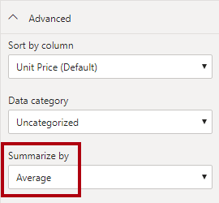
By default, numeric columns will summarize by summing values together. This default behavior is not suitable for a column like Unit Price, which represents a rate. Setting the default summarization to average will produce a meaningful result.
In this task you will update multiple columns using single bulk updates. You will use this approach to hide columns, and format column values.
In this exercise you will switch to Report view, and review the model interface.
In this task you will switch to Report view, and review the model interface.
-
Switch to Report view.
-
In the Fields pane, notice the following:
-
Columns, hierarchies and their levels are fields, which can be used to configure report visuals
-
Only fields relevant to report authoring are visible
-
The SalespersonRegion table is not visible—because all of its fields are hidden
-
Spatial fields in the Region and Reseller table are adorned with a spatial icon
-
Fields adorned with the sigma symbol (Ʃ) will summarize, by default
-
A tooltip appears when hovering the cursor over the Sales | Cost field
-
Expand the Sales | OrderDate field, and then notice that it reveals a date hierarchy.
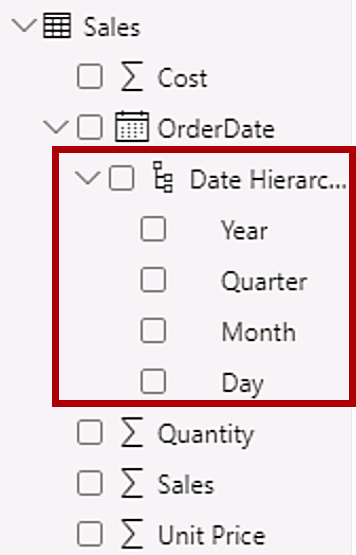
The Targets | TargetMonth field delivers a similar hierarchy. These hierarchies were not created by you. They were created automatically. There is a problem, however. The Adventure Works financial year commences on July 1 of each year. But, in these automatically created date hierarchies, the date hierarchy year commences on January 1 of each year.
You’ll now turn this automatic behavior off. In the Create DAX Calculations in Power BI Desktop, Part 1 lab, you’ll use DAX to create a date table, and configure it define the Adventure Works’ calendar.
-
To turn off auto/date time, click the File ribbon tab to open the backstage view.
-
At the left, select Options and Settings, and then select Options.
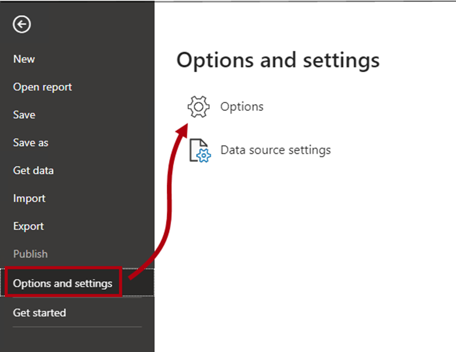
-
In the Options window, at the left, in the Current File group, select Data Load.

-
In the Time Intelligence section, uncheck Auto Date/Time.

-
Click OK.

-
In the Fields pane, notice that the date hierarchies are no longer available.

In this exercise you will create two quick measures.
In this task you will create two quick measures to calculate profit and profit margin.
-
In the Fields pane, right-click the Sales table, and then select New Quick Measure.
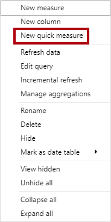
-
In the Quick Measures window, in the Calculation dropdown list, from inside the Mathematical Operations group, select Subtraction.

-
In the Fields pane of the Quick Measures window, expand the Sales table.
-
Drag the Sales field into the Base Value box.
-
Drag the Cost field into the Value to Subtract box.

-
Click OK.

A quick measure creates the calculation formula for you. They’re easy and fast to create for simple and common calculations. You’ll create measures without using this tool in the Create DAX Calculations in Power BI Desktop, Part 1 lab.
-
In the Fields pane, inside the Sales table, notice that new measure.

Measures are adorned with the calculator icon.
-
To rename the measure, right-click it, and then select Rename.
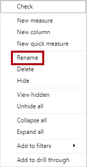
Tip: To rename a field, you can also double-click it, or select it and press F2.
-
Rename the measure to Profit, and then press Enter.
-
In the Sales table, add a second quick measure, based on the following requirements:
-
Use the Division mathematical operation
-
Set the Numerator to the Sales | Profit field
-
Set the Denominator to Sales | Sales field
-
Rename the measure as Profit Margin
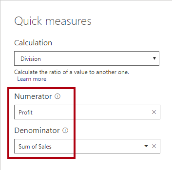

-
Ensure the Profit Margin measure is selected, and then on the Measure Tools contextual ribbon, set the format to Percentage, with two decimal places.

-
To test the two measures, first select the table visual on the report page.
-
In the Fields pane, check the two measures.

-
Click and drag the right guide to widen the table visual.
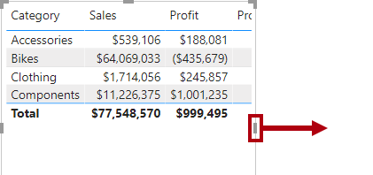
-
Verify that the measures produce reasonable results that are correctly formatted.

In this task you will complete the lab.